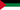
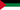

مغارة بني عاد
Grotte des ain Beni Add - Grotte Béni Add
Useful Information
| Location: |
Near Ain Fezza.
A3 freeway exit Tlemcen, RN22 towards Tlemcen, at roundabout RN22C towards Sidi Bel Abbes, turn right to Ain Fezza, first left, 8 km to parking. Signposted. (34.853080, -1.206211) |
| Open: | |
| Fee: |
Adults DZD 50, Guide DZD 30. [2023] |
| Classification: |
 Karst Cave Karst Cave
|
| Light: |
 Incandescent Electric Light System Incandescent Electric Light System
|
| Dimension: | A=1,143 m, L=700 m, VR=57 m, T=13 °C. |
| Guided tours: | self guided, L=600 m. |
| Photography: | |
| Accessibility: | |
| Bibliography: |
Piers Barrington, Steve Foster, Howard Jones (1987):
Algeria - Caving in the West,
[in] LUSS 4, Lancaster University Speleological Society Journal Vol 2 No 1 1987 pp 85-96.
Grottes des ain Beni Add, page 94.
|
| Address: | +213-43-21-49-56. |
| As far as we know this information was accurate when it was published (see years in brackets), but may have changed since then. Please check rates and details directly with the companies in question if you need more recent info. |
|
History
| 1953 | passage filled with concrete. |
| 2001 | show cave closed for renovation. |
| JUL-2006 | cave reopened to the public. |
Description
The مغارة بني عاد (Magharat Bani Ead, Grotte des ain Beni Add, Cave of Beni Add) is named after the nearby village Beni Add. The cave is also known as Beni Add Ain Fezza Caves which unites the names of the village Beni Add and the village Ain Fezza. Actually it is reached on a road which starts at Ain Fezza and ends at the cave.
This cave is extremely beautifully decorated. The visitor follows a long concrete staircase down the main passage and soon enters the first chamber. This huge hall is dominated by a huge group of stalagmites in its centre. The cieling is up to 18 m high. The fantastic display of speleothems and the beautiful lighting make this an extraordinary sight. However, that's not all, there are two more chambers, a little smaller but also well decorated.
The cave was discovered by the Berber tribes who settled in this area. It was developed as a show cave while Algier was still occupied by the French. The cave was closed for renovation in 2001 for five years. The railings are still original, they were made of wrought iron with small ornaments. But the cave has a new light system and video surveillance. The visitors enter the cave self-guided, the video surveillance is obviously intended to prevent vandalism. Nevertheless, we were shocked to see a YouTube video where the visitors climb over the railings and lean on stalagmites to make a selfie in the floodlight. As far as the video shows there were no repercussions. Definitely a valid argument against self-guided tours. However, we think it's also a sign of a massive lack of empathy and care.
A rather strange thing happened in 1953, one passage was filled with concrete by the French Colonial Army. The reason was that there was a rumour that the passage was connected to Morocco, 53 km away. They wanted to make it impossible to secretly transport Algerian revolutionaries and mujahideen to Morocco or to transport weapons across the border. As a result they made it really bombproof, as they filled in 190 m³ of concrete. It was in the wake of the Algerian War, also known as the Algerian Revolution, the Algerian War of Independence, or the National Liberation War (1954 to 1962). The major armed conflict between France and the Algerian National Liberation Front (FLN) led to Algeria winning its independence from France.
This was obviously a
 Far Connection Legend.
The existence of 53 km would be a great deal, but actually the cave has only 700 m of passages.
Nevertheless, there are still statements of a length of 145 km of the whole cave system.
And despite contrary facts it is still considered to be the largest cave system in Algier.
Or that's simply what the cave administration tells the cave visitors to make the cave more interesting.
Stupid nonsense dies extremely hard.
Far Connection Legend.
The existence of 53 km would be a great deal, but actually the cave has only 700 m of passages.
Nevertheless, there are still statements of a length of 145 km of the whole cave system.
And despite contrary facts it is still considered to be the largest cave system in Algier.
Or that's simply what the cave administration tells the cave visitors to make the cave more interesting.
Stupid nonsense dies extremely hard.
- See also
 Search Google for "Grotte des ain Beni Add"
Search Google for "Grotte des ain Beni Add" Google Earth Placemark
Google Earth Placemark مغارة بني عاد  - Wikipedia (visited: 24-MAR-2023)
مغارة بني عاد  - Wikipedia (visited: 24-MAR-2023)- Grotte des Beni Add
 - Wikipedia (visited: 24-MAR-2023)
- Wikipedia (visited: 24-MAR-2023)  Grottes De Beni Add (visited: 24-MAR-2023)
Grottes De Beni Add (visited: 24-MAR-2023)- Algérie : Les grottes féériques de Beni Add, près de Tlemcen (visited: 24-MAR-2023)
 Index
Index Topics
Topics Hierarchical
Hierarchical Countries
Countries Maps
Maps Search
Search